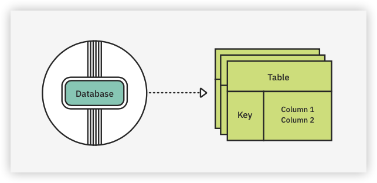
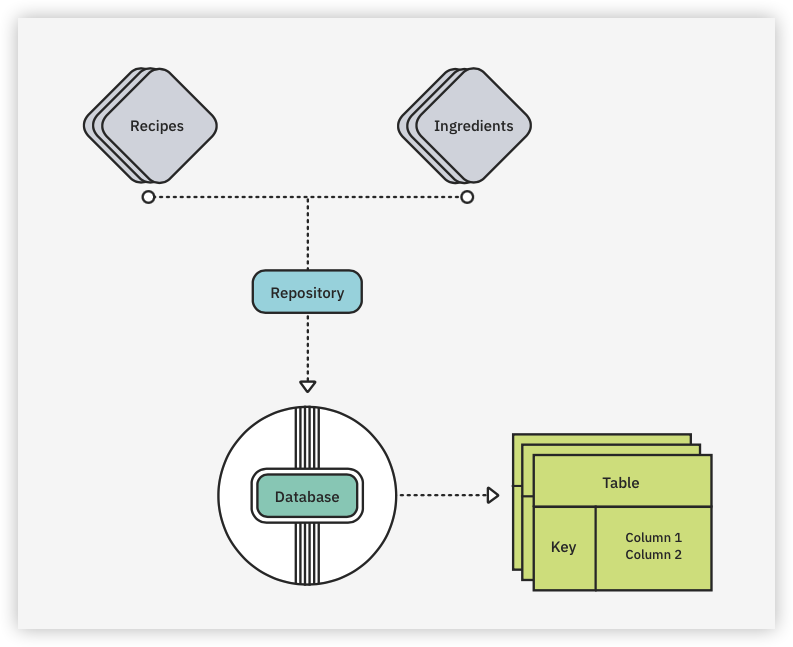
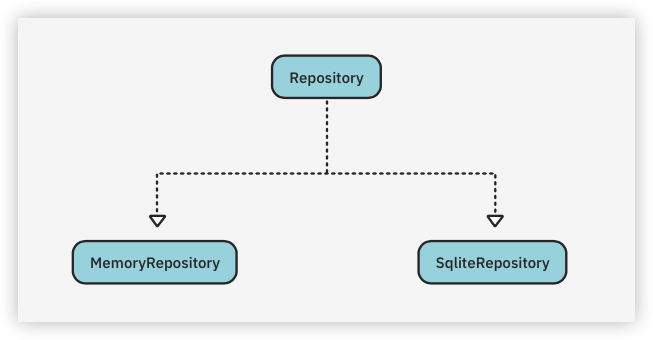
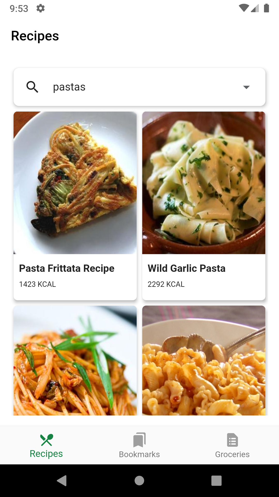
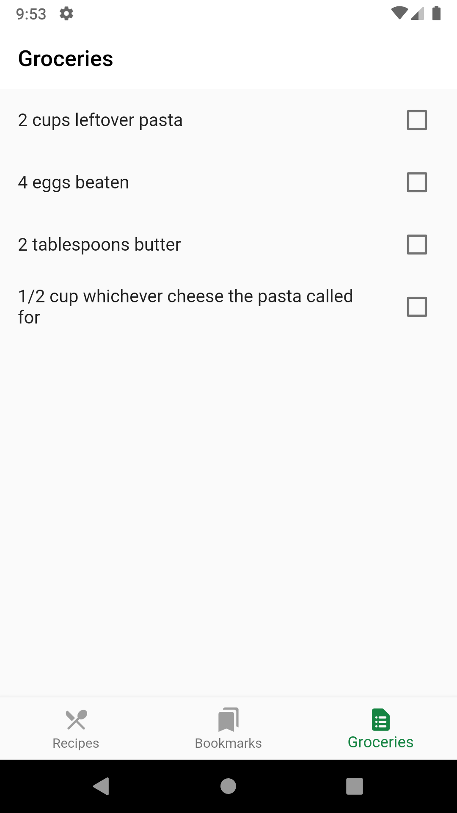
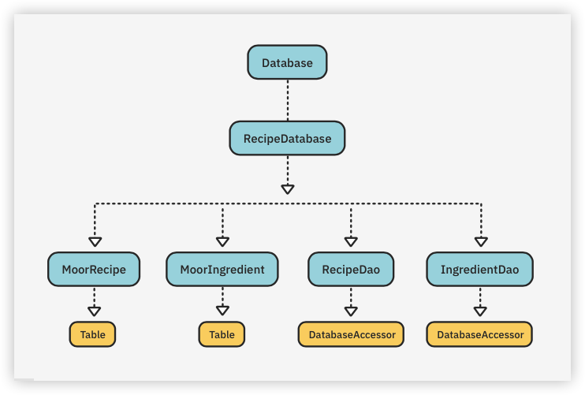
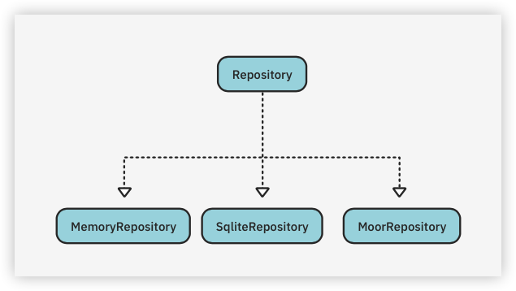

15 Saving Data With SQLite¶
So far, you have a great app that can search the internet for recipes, bookmark the ones you want to make and show a list of ingredients to buy at the store. But what happens if you close the app, go to the store and try to look up your ingredients? They’re gone! As you might have guessed, having an in-memory repository means that the data doesn’t persist after your app closes.
One of the best ways to persist data is with a database. Both Android and iOS provide access to the SQLite database system. This allows you to insert, read, update and remove structured data that are persisted on disk.
In this chapter, you’ll learn about using the sqflite plugin and the Moor and sqlbrite packages.
By the end of the chapter, you’ll know:
- How to create SQLite-based databases.
- How to insert, fetch and remove recipes or ingredients.
- How to use the sqflite plugin.
- How to use the sqlbrite library and receive updates via streams.
- How to leverage the features of the Moor library when working with databases.
Databases¶
Databases have been around for a long time, but being able to put a full-blown database on a phone is pretty amazing.
What is a database? Think of it like a file cabinet that contains folders with sheets of paper in them. A database has tables (file folders) that store data (sheets of paper).

Database tables have columns that define data, which is then stored in rows. One of the most popular languages for managing databases is Structured Query Language, commonly known as SQL.
You use SQL commands to get the data in and out of the database. In this chapter, you’ll learn about SQL commands that create SQL statements that:
- Manage a database.
- Manage data in the database’s tables.
Using SQL¶
The SQLite database system on Android and iOS is an embedded engine that runs in the same process as the app. SQLite is lightweight, taking up less than 500 Kb on most systems.
When SQLite creates a database, it stores it in one file inside an app. These files are cross-platform, meaning you can pull a file off a phone and read it on a regular computer.
Unlike a database server, SQLite needs no server configuration or server process.
While SQLite is small and runs fast, it still requires some knowledge of the SQL language and how to create databases, tables and execute SQL commands.
Writing queries¶
One of the most important parts of SQL is writing a query. To make a query, use the SELECTcommand followed by any columns you want the database to return, then the table name. For example:
// 1
SELECT name, address FROM Customers;
// 2
SELECT * FROM Customers;
// 3
SELECT name, address FROM Customers WHERE name LIKE 'A%';
Here’s what’s happening in the code above:
- Returns the name and address columns from the
CUSTOMERStable. - Using
*, returns all columns from the specified table. - Uses
WHEREto filter the returned data. In this case, it only returns data whereNAMEstarts withA.
Adding data¶
You can add data using the INSERT statement:
INSERT INTO Customers (NAME, ADDRESS) VALUES (value1, value2);
While you don’t have to list all the columns, if you want to add all the values, the values must be in the order you used to define the columns. It’s a best practice to list the column names whenever you insert data. That makes it easier to update your values list if, say, you add a column in the middle.
Deleting data¶
To delete data, use the DELETE statement:
DELETE FROM Customers WHERE id = 1;
If you don’t use the WHERE clause, you’ll delete all the data from the table. Here, you delete the customer whose id equals 1. You can use broader conditions of course. For example, you might delete all the customers with a given city.
Updating data¶
You use UPDATE to update your data. You won’t need this command for this app, but for reference, the syntax is:
UPDATE customers
SET
phone = '555-12345',
WHERE id = 1;
This updates the phone number of the customer whose id equals 1.
To store recipes and ingredients in a database, you’ll start by adding two new libraries to your app: sqflite and sqlbrite.
sqflite¶
The sqflite plugin provides SQLite database access on iOS, Android and macOS. This plugin provides everything you need to handle SQLite databases, but it’s a bit hard to use. Later, you’ll use the Moor package, which makes things easier. First, however, it’s important to learn how to use the underlying plugin.
Note: sqflite is a plugin package because it requires a Dart API and platform-specific code.
With sqflite, you need to manually create all the database’s tables and put SQL statements together by hand.
To start, you need to create the database and then create the table(s). This means you need to understand SQL’s CREATE TABLE. Here’s how it looks:
CREATE TABLE mytable (
id INTEGER PRIMARY KEY,
name TEXT,
value INTEGER,
NUM REAL
);
This creates a table named mytable with the following columns:
- id: Defined as an integer, it’s also the primary key.
- name: A string.
- value: An integer.
- num: Of type
REAL, this is stored as an 8-byte floating-point value.
A primary key is very important because it makes each row unique. This way, you can easily find or delete entries by using the id column.
Once you have a reference to the database, you can insert, delete, update or query its table(s). When you query the database, you’ll get a List<Map<String, dynamic>> back. You then need to take each item in the List and use a function to convert the Map into a class. This is similar to how you convert JSON into classes.
sqlbrite¶
The sqlbrite library is a reactive stream wrapper around sqflite. It allows you to set up streams so you can receive events when there’s a change in your database. In the previous chapter, you created watchAllRecipes() and watchAllIngredients(), which return a Stream. To create these streams from a database, sqlbrite uses watch() methods.
Adding a database to the project¶
If you’re following along with your app, open it and keep using it with this chapter. If not, locate the projects folder for this chapter and open the starter folder.
Note: If you use the starter app, don’t forget to add your apiKey and apiId in network/recipe_service.dart.
Your app manages two types of data: recipes and ingredients, which you’ll model according to this diagram:

In this chapter, you’ll implement two different solutions: one with sqflite and one with Moor. This will give you the experience to decide which one you prefer. You’ll then swap the memory repository for the new database repository.
Adding sqflite¶
To use the sqflite plugin, open pubspec.yaml and add the following packages after the equatablepackage:
sqflite: ^2.0.3+1
path_provider: ^2.0.11
synchronized: ^3.0.0+3
sqlbrite: ^2.3.0
path: ^1.8.2
These packages provide the following:
- sqflite: Provides SQLite database access.
- path_provider: Simplifies dealing with common file system locations.
- synchronized: Helps implement lock mechanisms to prevent concurrent access, when needed.
- sqlbrite: Reactive wrapper around sqflite that receives changes happening in the database via streams.
- path: is a library that helps manipulating file paths.
Run Pub Get. Now, you’re ready to create your first database.
Setting up the database¶
In the data folder, create a new folder named sqlite. Inside that folder, create a new file called database_helper.dart. This class will handle all the SQLite database operations.
Start by adding all the imports you’ll need:
import 'package:path/path.dart';
import 'package:sqflite/sqflite.dart';
import 'package:path_provider/path_provider.dart';
import 'package:sqlbrite/sqlbrite.dart';
import 'package:synchronized/synchronized.dart';
import '../models/models.dart';
This provides access to all your packages.
Now, define the class:
class DatabaseHelper {
}
Next, define some fields and constants:
// 1
static const _databaseName = 'MyRecipes.db';
static const _databaseVersion = 1;
// 2
static const recipeTable = 'Recipe';
static const ingredientTable = 'Ingredient';
static const recipeId = 'recipeId';
static const ingredientId = 'ingredientId';
// 3
static late BriteDatabase _streamDatabase;
// make this a singleton class
// 4
DatabaseHelper._privateConstructor();
static final DatabaseHelper instance = DatabaseHelper._privateConstructor();
// 5
static var lock = Lock();
// only have a single app-wide reference to the database
// 6
static Database? _database;
// TODO: Add create database code here
Here’s what’s happening in the code:
- Constants for the database name and version.
- Define the names of the tables.
- Your sqlbrite database instance.
lateindicates the variable is non-nullable and that it will be initialized after it’s been declared. - Make the constructor private and provide a public static
instance. - Define
lock, which you’ll use to prevent concurrent access. - Private sqflite database instance.
You need to create the database once, then you can access it through your instance. This prevents other classes from creating multiple instances of the helper and initializing the database more than once.
Creating tables¶
One of the most important parts of creating a database is creating the tables. Your app will have two tables: recipeTable and ingredientTable.
While it isn’t required, it’s a good practice for tables to have a PRIMARY KEY, which is a unique ID for each record or row of data. You can automatically create this ID when a new record is created.
The TEXT SQL type represents all the strings, while the INTEGER SQL type represents the integers.
Locate // TODO: Add create database code here and replace it with the following to create two databases:
// SQL code to create the database table
// 1
Future _onCreate(Database db, int version) async {
// 2
await db.execute('''
CREATE TABLE $recipeTable (
$recipeId INTEGER PRIMARY KEY,
label TEXT,
image TEXT,
url TEXT,
calories REAL,
totalWeight REAL,
totalTime REAL
)
''');
// 3
await db.execute('''
CREATE TABLE $ingredientTable (
$ingredientId INTEGER PRIMARY KEY,
$recipeId INTEGER,
name TEXT,
weight REAL
)
''');
}
// TODO: Add code to open database
In the code above, you:
- Pass an sqflite database
dbinto the method. It will create the tables. - Create
recipeTablewith the same columns as the model usingCREATE TABLE. - Create
ingredientTable.
Note: You use
REALfor double values.
For this example, your app’s tables only have a few columns. You can use additional statements to add more tables and/or columns, if you need to.
Now that you’ve created the tables, you’ll learn how to access them.
Opening the database¶
Before you can use the database, you have to open it. _initDatabase() uses sqflite’s openDatabase(). Such method requires a path where it should create the database, the current database version and a “create” method name.
Replace the line that reads // TODO: Add code to open database with the following:
// this opens the database (and creates it if it doesn't exist)
// 1
Future<Database> _initDatabase() async {
// 2
final documentsDirectory = await getApplicationDocumentsDirectory();
// 3
final path = join(
documentsDirectory.path,
_databaseName,
);
// 4
// TODO: Remember to turn off debugging before deploying app to store(s).
Sqflite.setDebugModeOn(true);
// 5
return openDatabase(
path,
version: _databaseVersion,
onCreate: _onCreate,
);
}
// TODO: Add initialize getter here
In the code above, you:
- Declare that the method returns a
Future, as the operation is asynchronous. - Get the app document’s directory name, where you’ll store the database.
- Create a path to the database by appending the database name to the directory path.
- Turn on debugging. Remember to turn this off when you’re ready to deploy your app to the store(s).
- Use sqflite’s
openDatabase()to create and store the database file in thepath.
Next, since _database is private, you need to create a getter that will initialize the database. Replace // TODO: Add initialize getter here with this:
// 1
Future<Database> get database async {
// 2
if (_database != null) return _database!;
// Use this object to prevent concurrent access to data
// 3
await lock.synchronized(() async {
// lazily instantiate the db the first time it is accessed
// 4
if (_database == null) {
// 5
_database = await _initDatabase();
// 6
_streamDatabase = BriteDatabase(_database!);
}
});
return _database!;
}
// TODO: Add getter for streamDatabase
This method will open and create the database, if it hasn’t been created before. Specifically:
- Other methods and classes can use this getter to access (get) the database.
- If
_databaseis notnull, it’s already been created, so you return the existing one. - Use
lockto ensure that only one process can be in this section of code at a time. - Check to make sure the database is null.
- Call the
_initDatabase(), which you defined above. - Create a
BriteDatabaseinstance, wrapping the database.
Note: When you run the app a second time, it won’t call
_onCreate()because the database already exists.
Now that you have a getter for the database, create a getter for the stream database by replacing // TODO: Add getter for streamDatabase with:
// 1
Future<BriteDatabase> get streamDatabase async {
// 2
await database;
return _streamDatabase;
}
// TODO: Add parseRecipes here
Here, you:
- Define an asynchronous getter method.
- Await the result — because it also creates
_streamDatabase.
You’ll use the stream database for the stream methods in your repository, as well as to insert and delete data.
The infrastructure is now in place, but the database speaks SQL and your app deals with either JSON or Dart classes. It’s time to add some helper methods to convert SQL data to JSON and vice versa.
Converting data to classes¶
To convert the stored map of data from the database to classes, you’ll need to add fromJson() and toJson() to the model classes.
Note: If you need more information on JSON, see Chapter 10, “Serialization With JSON”.
Open data/models/recipe.dart. Add the following at the bottom, before the closing }:
// Create a Recipe from JSON data
factory Recipe.fromJson(Map<String, dynamic> json) => Recipe(
id: json['recipeId'],
label: json['label'],
image: json['image'],
url: json['url'],
calories: json['calories'],
totalWeight: json['totalWeight'],
totalTime: json['totalTime'],
);
// Convert our Recipe to JSON to make it easier when you store
// it in the database
Map<String, dynamic> toJson() => {
'recipeId': id,
'label': label,
'image': image,
'url': url,
'calories': calories,
'totalWeight': totalWeight,
'totalTime': totalTime,
};
These two methods convert a Map<String, dynamic> to a Recipe and vice versa.
Open data/models/ingredient.dart. Add these two methods at the bottom, before the closing }:
// Create a Ingredient from JSON data
factory Ingredient.fromJson(Map<String, dynamic> json) => Ingredient(
id: json['ingredientId'],
recipeId: json['recipeId'],
name: json['name'],
weight: json['weight'],
);
// Convert our Ingredient to JSON to make it easier when you
// store it in the database
Map<String, dynamic> toJson() => {
'ingredientId': id,
'recipeId': recipeId,
'name': name,
'weight': weight,
};
Similar to Recipe’s methods, these let you convert an Ingredient to a Map and vice versa.
Now, return to database_helper.dart and replace // TODO: Add parseRecipes here with the following:
List<Recipe> parseRecipes(List<Map<String, dynamic>> recipeList) {
final recipes = <Recipe>[];
// 1
for (final recipeMap in recipeList) {
// 2
final recipe = Recipe.fromJson(recipeMap);
// 3
recipes.add(recipe);
}
// 4
return recipes;
}
List<Ingredient> parseIngredients(List<Map<String, dynamic>> ingredientList) {
final ingredients = <Ingredient>[];
for (final ingredientMap in ingredientList) {
// 5
final ingredient = Ingredient.fromJson(ingredientMap);
ingredients.add(ingredient);
}
return ingredients;
}
// TODO: Add findAppRecipes here
In the code above, you:
- Iterate over a list of recipes in JSON format.
- Convert each recipe into a
Recipeinstance. - Add the
recipeto the recipe list. - Return the list of
recipes. - Convert each ingredient in JSON format into a list of
Ingredients.
With the conversion code in place, it’s now time to integrate it into the existing repository.
Implementing repository-like functions¶
Your next step is to create functions that return the information that the repository expects. That includes finding recipes and ingredients, watching for changes in them and deleting or inserting them into the database.
Start with the first three methods of the repository pattern: findAllRecipes(), watchAllRecipes() and watchAllIngredients(). This is the pattern you’ll use:
- Get the database.
- Perform the query and return the parsed results.
Still in database_helper.dart, locate // TODO: Add findAppRecipes here and replace it with the following:
Future<List<Recipe>> findAllRecipes() async {
// 1
final db = await instance.streamDatabase;
// 2
final recipeList = await db.query(recipeTable);
// 3
final recipes = parseRecipes(recipeList);
return recipes;
}
// TODO: Add watchAllRecipes() here
In this code, you:
- Get your database
instance. - Use the database
query()to get all the recipes. This method has other parameters, but you don’t need them here. - Use
parseRecipes()to get a list of recipes.
Now, you need to handle the two watch() methods, which are a bit different. You’ll use yield* with a query to create a stream and async* on the method name.
Replace // TODO: Add watchAllRecipes() here with:
Stream<List<Recipe>> watchAllRecipes() async* {
final db = await instance.streamDatabase;
// 1
yield* db
// 2
.createQuery(recipeTable)
// 3
.mapToList((row) => Recipe.fromJson(row));
}
// TODO: Add watchAllIngredients() here
Here’s what’s happening:
yield*creates aStreamusing the query.- Create a query using
recipeTable. - For each row, convert the row to a list of recipes.
Now, for the ingredients, you need a similar method.
Replace // TODO: Add watchAllIngredients() here with:
Stream<List<Ingredient>> watchAllIngredients() async* {
final db = await instance.streamDatabase;
yield* db
.createQuery(ingredientTable)
.mapToList((row) => Ingredient.fromJson(row));
}
// TODO: Add findRecipeByID() here
Here you watch for results of a query to the ingredients table, which is delivered via a stream. Notice the async* and the yield* keywords used to signal a stream.
Now that you’ve ensured that the repository will get the data it expects, your next step is to let the user find the recipes they need.
Finding recipes¶
After the user has added recipes, they’ll want a quick way to find the one they have in mind for dinner. That’s what you’ll work on next.
While you could use rawQuery(), which uses raw SQL commands, it’s easier to pull data from a database if you use query(), instead. query() lets you pass the columns you want to be returned and even include a where filter. You can also group, order or add limits with an offset.
To find a specific recipe, you need to query using the unique recipe ID. To enable this, replace // TODO: Add findRecipeByID() here with this code:
Future<Recipe> findRecipeById(int id) async {
final db = await instance.streamDatabase;
final recipeList = await db.query(
recipeTable,
where: 'id = $id',
);
final recipes = parseRecipes(recipeList);
return recipes.first;
}
// TODO: Put findAllIngredients() here
This is similar to findAllRecipes(); the only difference is that you pass an id to where. The query method returns a list, even when there is one item on the list.
Next, replace // TODO: Put findAllIngredients() here with findAllIngredients():
Future<List<Ingredient>> findAllIngredients() async {
final db = await instance.streamDatabase;
final ingredientList = await db.query(ingredientTable);
final ingredients = parseIngredients(ingredientList);
return ingredients;
}
// TODO: findRecipeIngredients() goes here
Here, you use ingredientTable and pass the results to parseIngredients().
To find all the ingredients for a specific recipe, you need to use the where clause when searching for ingredients with a specific recipe ID. Replace // TODO: findRecipeIngredients() goes here with:
Future<List<Ingredient>> findRecipeIngredients(int recipeId) async {
final db = await instance.streamDatabase;
final ingredientList =
await db.query(
ingredientTable,
where: 'recipeId = $recipeId',
);
final ingredients = parseIngredients(ingredientList);
return ingredients;
}
// TODO: Insert methods go here
Here you query the ingredients table by recipe ID, parse the results and return the list of ingredients.
Inserting data into tables¶
The user will want to add the delicious recipes they find to the app. To let them do this, you need a way to insert data into tables.
BriteDatabase provides insert(). This method takes a table name and the JSON to do the insertion. As long as the models have a toJson() and a fromJson(), you can easily write methods to insert an entry into a table.
Locate and replace // TODO: Insert methods go here with the following methods:
// 1
Future<int> insert(String table, Map<String, dynamic> row) async {
final db = await instance.streamDatabase;
// 2
return db.insert(
table,
row,
);
}
Future<int> insertRecipe(Recipe recipe) {
// 3
return insert(
recipeTable,
recipe.toJson(),
);
}
Future<int> insertIngredient(Ingredient ingredient) {
// 4
return insert(
ingredientTable,
ingredient.toJson(),
);
}
// TODO: Delete methods go here
Here’s what’s going on in this code:
- Take the table name and the JSON map.
- Use Sqlbrite’s
insert(). - Return values from
insert()using the recipe’s table and JSON data. - Return values from
insert()using the ingredient’s table and JSON data.
But what if the user doesn’t like the recipe they added? They need a way to remove data as well. That’s the next step.
Deleting data¶
Deleting data is just as easy as inserting it; you just need the table name and a row ID. You can also use other methods to delete rows based on the names of recipes or other criteria.
Replace // TODO: Delete methods go here with the following:
// 1
Future<int> _delete(String table, String columnId, int id) async {
final db = await instance.streamDatabase;
// 2
return db.delete(
table,
where: '$columnId = ?',
whereArgs: [id],
);
}
Future<int> deleteRecipe(Recipe recipe) async {
// 3
if (recipe.id != null) {
return _delete(
recipeTable,
recipeId,
recipe.id!,
);
} else {
return Future.value(-1);
}
}
Future<int> deleteIngredient(Ingredient ingredient) async {
if (ingredient.id != null) {
return _delete(
ingredientTable,
ingredientId,
ingredient.id!,
);
} else {
return Future.value(-1);
}
}
Future<void> deleteIngredients(List<Ingredient> ingredients) {
// 4
for (final ingredient in ingredients) {
if (ingredient.id != null) {
_delete(
ingredientTable,
ingredientId,
ingredient.id!,
);
}
}
return Future.value();
}
Future<int> deleteRecipeIngredients(int id) async {
final db = await instance.streamDatabase;
// 5
return db
.delete(
ingredientTable,
where: '$recipeId = ?',
whereArgs: [id],
);
}
// TODO: Add close() here
Here’s what this does:
- Create a private function,
_delete(), which will delete data from thetablewith the provided column and rowid. - Delete a row where
columnIdequals the passed-inid. - Call
_delete(), which deletes a recipe with the passed ID. - For each ingredient, delete that entry from the ingredients table.
- Delete all ingredients that have the given
recipeId.
_delete() and deleteRecipeIngredients() use the where and whereArgs parameters. If you use whereArgs, you need to use a ? for each item in the list of arguments. Notice the last method. It uses whereArgs: [id]. This is an array of parameters. For every question mark, you need an entry in the array.
You could also delete a recipe based on the label string, but this causes problems if you have multiple entries with the same label.
You’re nearly done with the setup! You just need a way to open and close the database.
Initializing and closing¶
SQLite databases need to be opened and closed. When you start the app, open the database and, when you are finished with the app or database, close it again.
Using providers is a nice way to open and close the database. Your helper class doesn’t need its own init, but it does have the database getter that needs time to open up the database. When it finishes processing, you need to close the getter.
Replace // TODO: Add close() here with your last method:
void close() {
_streamDatabase.close();
}
Closing _streamDatabase will close the regular sqflite database, as well as any subscriptions.
Now on to integrate the new code with the existing repository-based code.
Adding an SQLite repository¶
Just like your MemoryRepository, you need a repository class for your database. You’ll create SqliteRepository to fulfill this need.

This class will implement the Repository interface.
In the sqlite folder, create a new file called sqlite_repository.dart and add the following, ignoring the red squiggles:
import 'dart:async';
// 1
import '../repository.dart';
import 'database_helper.dart';
import '../models/models.dart';
// 2
class SqliteRepository extends Repository {
// 3
final dbHelper = DatabaseHelper.instance;
// TODO: Add methods to use dbHelper here
}
Here’s what this code does:
- Include helper class, models and repository interface.
- Create a new class named
SqliteRepositorythat extendsRepository. - Add a
dbHelperfield, which is just a single instance ofDatabaseHelper.
Replace // TODO: Add methods to use dbHelper here with the following:
@override
Future<List<Recipe>> findAllRecipes() {
return dbHelper.findAllRecipes();
}
@override
Stream<List<Recipe>> watchAllRecipes() {
return dbHelper.watchAllRecipes();
}
@override
Stream<List<Ingredient>> watchAllIngredients() {
return dbHelper.watchAllIngredients();
}
@override
Future<Recipe> findRecipeById(int id) {
return dbHelper.findRecipeById(id);
}
@override
Future<List<Ingredient>> findAllIngredients() {
return dbHelper.findAllIngredients();
}
@override
Future<List<Ingredient>> findRecipeIngredients(int recipeId) {
return dbHelper.findRecipeIngredients(recipeId);
}
// TODO: Add recipe insert here
These methods just call the helper class, but the insert methods do a bit more. To set the recipeId for each ingredient, you first have to insert the recipe into the database and get the returned recipe ID from the insert call. You can then set this ID on each ingredient. Those ingredients are then ready to be added to the database.
Setting the recipe’s ID¶
If the ingredient’s recipeId isn’t set, the database won’t know which ingredient belongs to which recipe.
Replace // TODO: Add recipe insert here with the following method:
@override
Future<int> insertRecipe(Recipe recipe) {
// 1
return Future(() async {
// 2
final id = await dbHelper.insertRecipe(recipe);
// 3
recipe.id = id;
if (recipe.ingredients != null) {
recipe.ingredients!.forEach((ingredient) {
// 4
ingredient.recipeId = id;
});
// 5
insertIngredients(recipe.ingredients!);
}
// 6
return id;
});
}
// TODO: Insert ingredients
Here’s what’s happening:
- Return an asynchronous
Future. - Use your helper to insert the recipe and save the
id. - Set your recipe class’s
idto thisid. - Set each ingredient’s
recipeIdfield to thisid. - Insert all the ingredients.
- Return the new
id.
Before you can insert the ingredient, you need to update all the ingredients’ recipeIds to the new ID of the inserted recipe.
Inserting the ingredients¶
Next, you’ll insert the ingredients.
Replace // TODO: Insert ingredients with:
@override
Future<List<int>> insertIngredients(List<Ingredient> ingredients) {
return Future(() async {
if (ingredients.length != 0) {
// 1
final ingredientIds = <int>[];
// 2
await Future.forEach(ingredients, (Ingredient ingredient) async {
// 3
final futureId = await dbHelper.insertIngredient(ingredient);
ingredient.id = futureId;
// 4
ingredientIds.add(futureId);
});
// 5
return Future.value(ingredientIds);
} else {
return Future.value(<int>[]);
}
});
}
// TODO: Delete methods go here
Here’s what’s going on:
- Create a list of new ingredient IDs.
- Since you need to use
awaitwithinsertIngredient, you need to wrap everything in an asynchronousFuture. This is a bit tricky, but it allows you to wait for each ID. It returns aFutureso the whole method can still run asynchronously. - Get the new ingredient’s ID.
- Add the ID to your return list.
- Return the list of new IDs.
Deleting recipes¶
Now that you have the delete methods in the helper class, you need to implement them in the repository. Most of these just call the helper’s methods.
Locate and replace // TODO: Delete methods go here with:
@override
Future<void> deleteRecipe(Recipe recipe) {
// 1
dbHelper.deleteRecipe(recipe);
// 2
if (recipe.id != null) {
deleteRecipeIngredients(recipe.id!);
}
return Future.value();
}
@override
Future<void> deleteIngredient(Ingredient ingredient) {
// 3
dbHelper.deleteIngredient(ingredient);
return Future.value();
}
@override
Future<void> deleteIngredients(List<Ingredient> ingredients) {
// 4
dbHelper.deleteIngredients(ingredients);
return Future.value();
}
@override
Future<void> deleteRecipeIngredients(int recipeId) {
// 5
dbHelper.deleteRecipeIngredients(recipeId);
return Future.value();
}
// TODO: initialize and close methods go here
Here’s what these methods do:
- Call the helper’s
deleteRecipe(). - Delete all of this recipe’s ingredients.
- Delete ingredients and ignore the number of deleted rows.
- Delete all ingredients in the list passed in.
- Delete all ingredients with the given recipe ID.
These methods just call the helper class and return an empty Future.
Initializing and closing¶
Remember that databases need to be opened and closed. To do this, your repository just needs to call dbHelper’s methods.
Replace // TODO: initialize and close methods go here with:
@override
Future init() async {
// 1
await dbHelper.database;
return Future.value();
}
@override
void close() {
// 2
dbHelper.close();
}
In this code, you:
- Await for the database to initialize.
- Call the helper’s
close()method.
Running the app¶
After all that work, it’s time to see your changes. For your last change before you run, open main.dart.
First, import the new repository:
import 'data/sqlite/sqlite_repository.dart';
Second, initialize the repository in main() and pass that repository to the widget by replacing the line that reads runApp(const MyApp()); with the following:
final repository = SqliteRepository();
await repository.init();
runApp(MyApp(repository: repository));
These lines use await to wait for the repository to initialize, then run the app.
At the top of MyApp, add a new repository field by replacing const MyApp({Key? key}) : super(key: key); with:
final Repository repository;
const MyApp({
Key? key,
required this.repository,
}) : super(key: key);
Scroll down and find a line that reads create: (_) => MemoryRepository(),. Replace it with:
// 1
create: (_) => repository,
// 2
dispose: (_, Repository repository) => repository.close(),
Here’s what this code does:
createpasses inrepository(the repository was created earlier).disposecallsclose()to close the database.
Stop and restart the app and search for pastas. You’ll see something like:

Click the first entry. You’ll see a details page, similar to this:
Clicking the Bookmark button will bring you back to the Recipes tab. Now, select the Bookmarkstab, and check that it displays the recipe you just bookmarked.
Now, tap the Groceries tab and you’ll see the grocery list with the ingredients for your bookmarked recipe:

Stop the app by clicking the red Stop button in Android Studio and build and run again.
You’ll now see the same bookmarks and groceries as before. Phew! That was a lot of work, but you did it. Pretty amazing!
All the recipes that you bookmarked are saved in the database and will be available each time you run the app.
Congratulations, you achieved the first milestone! Is there something to improve? Is there a simpler and more maintainable way to achieve the same result? Yes, there is. In the next section, you’ll see how to use Moor.
Using the Moor Library¶
As you saw, that was a lot of work. Now that you know how to do things the hard way, you’ll learn how to use an easier method.
Moor is a package that’s intentionally similar to the Room library on Android. In fact, Moor is just Room spelled backward.
Unlike sqflite, you don’t need to write SQL code and the setup is a lot easier. You’ll write specific Dart classes and Moor will take care of the necessary translations to and from SQL code.
You need one file for dealing with the database and one for the repository. To start, add Moor to pubspec.yaml, after path:
moor_flutter: ^4.1.0
Next, add the Moor generator, which will write code for you, in the dev_dependencies section after chopper_generator:
moor_generator: ^4.6.0+1
Finally, run any of the following:
flutter pub getfrom Terminal- Pub get from the IDE window
- Tools ▸ Flutter ▸ Flutter Pub Get
Database classes¶
For your next step, you need to create a set of classes that will describe and create the database, tables and Data Access Objects (DAOs).

Table and DatabaseAccessor are from Moor. You’ll create the other classes.
Note: A DAO is a class that is in charge of accessing data from the database. It’s used to separate your business logic code (e.g., the one that fetches the ingredients of a recipe) from the details of the persistence layer (SQLite in this case). A DAO can be a class, an interface or an abstract class. In this chapter, you’ll implement DAOs using classes.
Create a new folder inside data called moor. Inside moor, create a file called moor_db.dart and add the following imports:
import 'package:moor_flutter/moor_flutter.dart';
import '../models/models.dart';
This will add Moor and your models.
Now, add a part statement:
part 'moor_db.g.dart';
// TODO: Add MoorRecipe table definition here
// TODO: Add MoorIngredient table definition here
// TODO: Add @UseMoor() and RecipeDatabase() here
// TODO: Add RecipeDao here
// TODO: Add IngredientDao
// TODO: Add moorRecipeToRecipe here
// TODO: Add MoorRecipeData here
// TODO: Add moorIngredientToIngredient and MoorIngredientCompanion here
Remember, this is a way to combine one file into another to form a whole file. The Moor generator will create this file for you later, when you run the build_runner command. Until then, it’ll display a red squiggle.
Creating tables¶
To create a table in Moor, you need to create a class that extends Table. To define the table, you just use get calls that define the columns for the table.
Still in moor_db.dart, replace // TODO: Add MoorRecipe table definition here with the following:
// 1
class MoorRecipe extends Table {
// 2
IntColumn get id => integer().autoIncrement()();
// 3
TextColumn get label => text()();
TextColumn get image => text()();
TextColumn get url => text()();
RealColumn get calories => real()();
RealColumn get totalWeight => real()();
RealColumn get totalTime => real()();
}
Here’s what you do in this code:
- Create a class named
MoorRecipethat extendsTable. - You want a column named
idthat is an integer.autoIncrement()automatically creates the IDs for you. - Create a label column made up of text.
This definition is a bit unusual. You first define the column type with type classes that handle different types:
- IntColumn: Integers.
- BoolColumn: Booleans.
- TextColumn: Text.
- DateTimeColumn: Dates.
- RealColumn: Doubles.
- BlobColumn: Arbitrary blobs of data.
It also uses a “double” method call, where each call returns a builder. For example, to create IntColumn, you need to make a final call with the extra () to create it.
Defining the Ingredient table¶
Now, find and replace // TODO: Add MoorIngredient table definition here with:
class MoorIngredient extends Table {
IntColumn get id => integer().autoIncrement()();
IntColumn get recipeId => integer()();
TextColumn get name => text()();
RealColumn get weight => real()();
}
This is similar to the sqflite recipe table.
Now, for the fun part: creating the database class.
Creating the database class¶
Moor uses annotations. The first one you need is @UseMoor. This specifies the tables and Data Access Objects (DAO) to use.
Still in moor_db.dart, add this class with the annotation by replacing // TODO: Add @UseMoor and RecipeDatabase() here with:
// 1
@UseMoor(
tables: [
MoorRecipe,
MoorIngredient,
],
daos: [
RecipeDao,
IngredientDao,
]
)
// 2
class RecipeDatabase extends _$RecipeDatabase {
RecipeDatabase()
// 3
: super(FlutterQueryExecutor.inDatabaseFolder(
path: 'recipes.sqlite', logStatements: true));
// 4
@override
int get schemaVersion => 1;
}
Here’s what the code above does:
- Describe the tables — which you defined above — and DAOs this database will use. You’ll create the DAOs next.
- Extend
_$RecipeDatabase, which the Moor generator will create. This doesn’t exist yet, but thepartcommand at the top will include it. - When creating the class, call the super class’s constructor. This uses the built-in Moor query executor and passes the pathname of the file. It also sets logging to
true. - Set the database or schema version to
1.
Now, if you compare this class to what you did for sqflite, you’ll notice that it’s much simpler and doesn’t involve any SQL statements. Starting to notice the advantages of using Moor? :]
There is still a bit more to do. You need to create DAOs, which are classes that are specific to a table and allow you to call methods to access that table. They’re similar to the methods in DatabaseHelper and have the same names.
Creating the DAO classes¶
Your first step is to create the RecipeDao class. You’ll see more red squiggles, just ignore them for now. With moor_db.dart still open, replace // TODO: Add RecipeDao here with the following:
// 1
@UseDao(tables: [MoorRecipe])
// 2
class RecipeDao extends DatabaseAccessor<RecipeDatabase> with _$RecipeDaoMixin {
// 3
final RecipeDatabase db;
RecipeDao(this.db) : super(db);
// 4
Future<List<MoorRecipeData>> findAllRecipes() => select(moorRecipe).get();
// 5
Stream<List<Recipe>> watchAllRecipes() {
// TODO: Add watchAllRecipes code here
}
// 6
Future<List<MoorRecipeData>> findRecipeById(int id) =>
(select(moorRecipe)..where((tbl) => tbl.id.equals(id))).get();
// 7
Future<int> insertRecipe(Insertable<MoorRecipeData> recipe) =>
into(moorRecipe).insert(recipe);
// 8
Future deleteRecipe(int id) => Future.value(
(delete(moorRecipe)..where((tbl) => tbl.id.equals(id))).go());
}
Here’s what’s going on:
@UseDaospecifies the following class is a DAO class for theMoorRecipetable.- Create the DAO class that extends the Moor
DatabaseAccessorwith the mixin,_$RecipeDaoMixin. - Create a field to hold an instance of your database.
- Use a simple
select()query to find all recipes. - Define
watchAllRecipes(), but skip the implementation for now. - Define a more complex query that uses
whereto fetch recipes by ID. - Use
into()andinsert()to add a new recipe. - Use
delete()andwhere()to delete a specific recipe.
In some ways, Moor is a bit more complex than sqflite, but it also doesn’t require as much setup. Most of these calls are one-liners and quite easy to read.
Inserting data is pretty simple. Just specify the table and pass in the class. Notice that you’re not passing the model recipe, you’re passing Insertable, which is an interface that Moor requires. When you generate the part file, you’ll see a new class, MoorRecipeData, which implements this interface.
Deleting requires the table and a where. This function just returns true for those rows you want to delete. Instead of get(), you use go().
Now, replace // TODO: Add IngredientDao with the following. Again ignoring the red squiggles. They’ll go away when all the new classes are in place.
// 1
@UseDao(tables: [MoorIngredient])
// 2
class IngredientDao extends DatabaseAccessor<RecipeDatabase>
with _$IngredientDaoMixin {
final RecipeDatabase db;
IngredientDao(this.db) : super(db);
Future<List<MoorIngredientData>> findAllIngredients() =>
select(moorIngredient).get();
// 3
Stream<List<MoorIngredientData>> watchAllIngredients() =>
select(moorIngredient).watch();
// 4
Future<List<MoorIngredientData>> findRecipeIngredients(int id) =>
(select(moorIngredient)..where((tbl) => tbl.recipeId.equals(id))).get();
// 5
Future<int> insertIngredient(Insertable<MoorIngredientData> ingredient) =>
into(moorIngredient).insert(ingredient);
// 6
Future deleteIngredient(int id) =>
Future.value((delete(moorIngredient)..where((tbl) =>
tbl.id.equals(id))).go());
}
Here’s what’s going on above:
- Similar to
RecipeDao, you define the table to use. - Extend
DatabaseAccessorwith_$IngredientDaoMixin. - Call
watch()to create a stream. - Use
where()to select all ingredients that match the recipe ID. - Use
into()andinsert()to add a new ingredient. - Use
delete()pluswhere()to delete a specific ingredient.
Now it’s time to generate the part file.
Generating the part file¶
Now, you need to create the Moor part file. In Terminal, run:
flutter pub run build_runner build --delete-conflicting-outputs
This generates moor_db.g.dart.
Note:
--delete-conflicting-outputsdeletes previously generated files, then rebuilds them.
After the file has been generated, open moor_db.g.dart and take a look. It’s a very large file. It generated several classes, saving you a lot of work!
Note: If Android Studio doesn’t detect the presence of the newly generated moor_db.g.dart file, right-click on the lib folder and select Reload from Disk.
Now that you’ve defined these tables, you need to create methods that convert your database classes to your regular model classes and back.
Converting your Moor recipes¶
At the end of moor_db.dart, replace // TODO: Add moorRecipeToRecipe here with:
// Conversion Methods
Recipe moorRecipeToRecipe(MoorRecipeData recipe) {
return Recipe(
id: recipe.id,
label: recipe.label,
image: recipe.image,
url: recipe.url,
calories: recipe.calories,
totalWeight: recipe.totalWeight,
totalTime: recipe.totalTime,
);
}
This converts a Moor recipe to a model recipe.
The next method converts Recipe to a class that you can insert into a Moor database. Replace // TODO: Add MoorRecipeData here with this:
Insertable<MoorRecipeData> recipeToInsertableMoorRecipe(Recipe recipe) {
return MoorRecipeCompanion.insert(
label: recipe.label ?? '',
image: recipe.image ?? '',
url: recipe.url ?? '',
calories: recipe.calories ?? 0,
totalWeight: recipe.totalWeight ?? 0,
totalTime: recipe.totalTime ?? 0,
);
}
Insertable is an interface for objects that can be inserted into the database or updated. Use the generated MoorRecipeCompanion.insert() to create that class.
Creating classes for Ingredients¶
Next, you’ll do the same for the ingredients models. Replace // TODO: Add moorIngredientToIngredient and MoorIngredientCompanion here with the following:
Ingredient moorIngredientToIngredient(MoorIngredientData ingredient) {
return Ingredient(
id: ingredient.id,
recipeId: ingredient.recipeId,
name: ingredient.name,
weight: ingredient.weight,
);
}
MoorIngredientCompanion ingredientToInsertableMoorIngredient(
Ingredient ingredient) {
return MoorIngredientCompanion.insert(
recipeId: ingredient.recipeId ?? 0,
name: ingredient.name ?? '',
weight: ingredient.weight ?? 0,
);
}
These methods convert a Moor ingredient into an instance of Ingredient and vice versa.
Updating watchAllRecipes()¶
Now that you’ve written the conversion methods, you can update watchAllRecipes().
You’ll notice most of the red squiggles in data/moor/moor_db.dart are now gone. There’s one left.
Note: Run
flutter cleanandflutter pub getin case your IDE is not up to date with the newly generated files.
Locate // TODO: Add watchAllRecipes code here and replace it with:
// 1
return select(moorRecipe)
// 2
.watch()
// 3
.map((rows) {
final recipes = <Recipe>[];
// 4
for (final row in rows) {
// 5
final recipe = moorRecipeToRecipe(row);
// 6
if (!recipes.contains(recipe)) {
recipe.ingredients = <Ingredient>[];
recipes.add(recipe);
}
}
return recipes;
},
);
Here’s the step-by-step:
- Use
select()to start a query. - Create a stream.
- Map each list of rows.
- For each row, execute the code below.
- Convert the recipe row to a regular recipe.
- If your list doesn’t already contain the recipe, create an empty ingredient list and add it to your recipes list.
In addition to creating a stream with watch(), you map the results into a model recipe and add an empty ingredient list. You then return the list of recipes.
No more red squiggles. :]
Creating the Moor repository¶
Now that you have the Moor database code written, you need to write a repository to handle it. You’ll create a class named MoorRepository that implements Repository:

In the moor directory, create a new file named moor_repository.dart. Add the following imports:
import 'dart:async';
import '../models/models.dart';
import '../repository.dart';
import 'moor_db.dart';
This imports your models, the repository interface and your just-created moor_db.dart.
Next, create MoorRepository and some fields:
class MoorRepository extends Repository {
// 1
late RecipeDatabase recipeDatabase;
// 2
late RecipeDao _recipeDao;
// 3
late IngredientDao _ingredientDao;
// 4
Stream<List<Ingredient>>? ingredientStream;
// 5
Stream<List<Recipe>>? recipeStream;
// TODO: Add findAllRecipes()
// TODO: Add watchAllRecipes()
// TODO: Add watchAllIngredients()
// TODO: Add findRecipeById()
// TODO: Add findAllIngredients()
// TODO: Add findRecipeIngredients()
// TODO: Add insertRecipe()
// TODO: Add insertIngredients()
// TODO: Add Delete methods
@override
Future init() async {
// 6
recipeDatabase = RecipeDatabase();
// 7
_recipeDao = recipeDatabase.recipeDao;
_ingredientDao = recipeDatabase.ingredientDao;
}
@override
void close() {
// 8
recipeDatabase.close();
}
}
Here’s what’s happening in the code above:
- Stores an instance of the Moor
RecipeDatabase. - Creates a private
RecipeDaoto handle recipes. - Creates a private
IngredientDaothat handles ingredients. - Creates a stream that watches ingredients.
- Creates a stream that watches recipes.
- Creates your database.
- Gets instances of your DAOs.
- Closes the database.
Implementing the repository¶
As you did in past chapters, you’ll now add all the missing methods following the TODO:indications. Replace // TODO: Add findAllRecipes() with:
@override
Future<List<Recipe>> findAllRecipes() {
// 1
return _recipeDao.findAllRecipes()
// 2
.then<List<Recipe>>(
(List<MoorRecipeData> moorRecipes) async {
final recipes = <Recipe>[];
// 3
for (final moorRecipe in moorRecipes) {
// 4
final recipe = moorRecipeToRecipe(moorRecipe);
// 5
if (recipe.id != null) {
recipe.ingredients = await findRecipeIngredients(recipe.id!);
}
recipes.add(recipe);
}
return recipes;
},
);
}
The code above does the following:
- Uses
RecipeDaoto find all recipes. - Takes the list of
MoorRecipeDataitems, executingthenafterfindAllRecipes()finishes. - For each recipe:
- Converts the Moor recipe to a model recipe.
- Calls the method to get all recipe ingredients, which you’ll define later.
The next step is simple. Find // TODO: Add watchAllRecipes() and substitute it with:
@override
Stream<List<Recipe>> watchAllRecipes() {
recipeStream ??= _recipeDao.watchAllRecipes();
return recipeStream!;
}
This just calls the same method name on the recipe DAO class, then saves an instance so you don’t create multiple streams.
Next, replace // TODO: Add watchAllIngredients() with:
@override
Stream<List<Ingredient>> watchAllIngredients() {
if (ingredientStream == null) {
// 1
final stream = _ingredientDao.watchAllIngredients();
// 2
ingredientStream = stream.map((moorIngredients) {
final ingredients = <Ingredient>[];
// 3
for (final moorIngredient in moorIngredients) {
ingredients.add(moorIngredientToIngredient(moorIngredient));
}
return ingredients;
},);
}
return ingredientStream!;
}
This:
- Gets a stream of ingredients.
- Maps each stream list to a stream of model ingredients
- Converts each ingredient in the list to a model ingredient.
Finding recipes¶
The find methods are a bit easier, but they still need to convert each database class to a model class.
Replace // TODO: Add findRecipeById() with:
@override
Future<Recipe> findRecipeById(int id) {
return _recipeDao
.findRecipeById(id)
.then((listOfRecipes) => moorRecipeToRecipe(listOfRecipes.first));
}
Since findRecipeById() returns a list, just take the first one and convert it.
Look for // TODO: Add findAllIngredients() and replace it with:
@override
Future<List<Ingredient>> findAllIngredients() {
return _ingredientDao.findAllIngredients().then<List<Ingredient>>(
(List<MoorIngredientData> moorIngredients) {
final ingredients = <Ingredient>[];
for (final ingredient in moorIngredients) {
ingredients.add(moorIngredientToIngredient(ingredient));
}
return ingredients;
},
);
}
This method is almost like watchAllIngredients(), except that it doesn’t use a stream.
Finding all the ingredients for a recipe is similar. Replace // TODO: Add findRecipeIngredients() with:
@override
Future<List<Ingredient>> findRecipeIngredients(int recipeId) {
return _ingredientDao.findRecipeIngredients(recipeId).then(
(listOfIngredients) {
final ingredients = <Ingredient>[];
for (final ingredient in listOfIngredients) {
ingredients.add(moorIngredientToIngredient(ingredient));
}
return ingredients;
},
);
}
This method finds all the ingredients associated with a single recipe. Now it’s time to look at inserting recipes.
Inserting recipes¶
To insert a recipe, first you insert the recipe itself and then insert all its ingredients. Replace // TODO: Add insertRecipe() with:
@override
Future<int> insertRecipe(Recipe recipe) {
return Future(
() async {
// 1
final id =
await _recipeDao.insertRecipe(
recipeToInsertableMoorRecipe(recipe),
);
if (recipe.ingredients != null) {
// 2
for (final ingredient in recipe.ingredients!) {
ingredient.recipeId = id;
}
// 3
insertIngredients(recipe.ingredients!);
}
return id;
},
);
}
Here you:
- Use the recipe DAO to insert a converted model recipe.
- Set the recipe ID for each ingredient.
- Insert all the ingredients. You’ll define these next.
Now, it’s finally time to add methods to insert ingredients. Replace // TODO: Add insertIngredients() with:
@override
Future<List<int>> insertIngredients(List<Ingredient> ingredients) {
return Future(
() {
// 1
if (ingredients.isEmpty) {
return <int>[];
}
final resultIds = <int>[];
for (final ingredient in ingredients) {
// 2
final moorIngredient =
ingredientToInsertableMoorIngredient(ingredient);
// 3
_ingredientDao
.insertIngredient(moorIngredient)
.then((int id) => resultIds.add(id));
}
return resultIds;
},
);
}
This code:
- Checks to make sure you have at least one ingredient.
- Converts the ingredient.
- Inserts the ingredient into the database and adds a new ID to the list.
Now it’s time to add code to delete recipes and ingredients.
Deleting¶
Deleting is much easier. You need to call the DAO methods. Replace // TODO: Add Delete methods with:
@override
Future<void> deleteRecipe(Recipe recipe) {
if (recipe.id != null) {
_recipeDao.deleteRecipe(recipe.id!);
deleteRecipeIngredients(recipe.id!);
}
return Future.value();
}
@override
Future<void> deleteIngredient(Ingredient ingredient) {
if (ingredient.id != null) {
return _ingredientDao.deleteIngredient(ingredient.id!);
} else {
return Future.value();
}
}
@override
Future<void> deleteIngredients(List<Ingredient> ingredients) {
for (final ingredient in ingredients) {
if (ingredient.id != null) {
_ingredientDao.deleteIngredient(ingredient.id!);
}
}
return Future.value();
}
@override
Future<void> deleteRecipeIngredients(int recipeId) async {
// 1
final ingredients = await findRecipeIngredients(recipeId);
// 2
return deleteIngredients(ingredients);
}
The last method is the only one that’s different. In the code above, you:
- Find all ingredients for the given recipe ID.
- Delete the list of ingredients.
Phew! The hard work is over.
Replacing the repository¶
Now, you just have to replace your SQL repository with your shiny new Moor repository.
Open main.dart. Add the import:
import 'data/moor/moor_repository.dart';
Delete the two import statements: import 'data/memory_repository.dart’; and import 'data/sqlite/sqlite_repository.dart';.
Replace this:
final repository = SqliteRepository();
with the following:
final repository = MoorRepository();
Running the app¶
Stop the running app, build and run. Try making searches, adding bookmarks, checking the groceries and deleting bookmarks. It will work just the same as with SqliteRepository. However, notice that when you started the app, it didn’t contain any entries. Do you know why?
Answer: The app now uses a different database file.
Congratulations! Now, your app is using all the power provided by Moor to store data in a local database!
Cleaning up (Optional)¶
In the next chapter you will not need the sqflite plugin now that you’re using Moor. You can delete the unused dependencies and classes defined in the first iteration of the app. Note that this is optional. To do so, delete the folder lib/data/sqlite and all its files. Then open pubspec.ymland remove the following libraries:
sqflite: ^2.0.3+1
path_provider: ^2.0.11
synchronized: ^3.0.0+3
Run Pub get then hot restart the app and verify that it works as before.
Key points¶
- Databases persist data locally to the device.
- Data stored in databases are available after the app restarts.
- The sqflite plugin requires some SQL knowledge to set up the database.
- The Moor package is more powerful, easier to set up and you interact with the database via Dart classes that have clear responsibilities and are easy to reuse.
Where to go from here?¶
To learn about:
- Databases and SQLite, go to https://flutter.dev/docs/cookbook/persistence/sqlite.
- sqflite, go to https://pub.dev/packages/sqflite.
- Moor, go to https://pub.dev/packages/moor_flutter.
- sqlbrite go to https://pub.dev/packages/sqlbrite.
- The database that started it all, go to https://www.sqlite.org/index.html.
In the next section, you’ll learn all about deploying your apps.